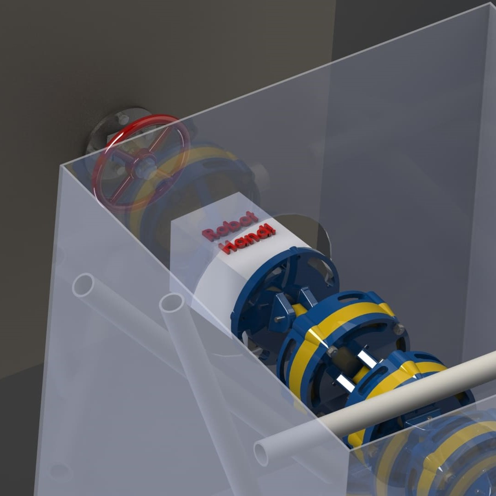

The Naval Nuclear Lab (NNL) partnered with my team composed of four mechanical engineering students to work on part of their multi-semester project. This project's mission centered on the development of an unmanned apparatus for handling hazardous material safely and reliably within a confined and cramped space. This was a continuation of previous steps that had been tackled. The problem scenario included navigating this robot through a 2'x2' array filled with random clutter visualized by the PVC pipe in the CAD image below.
We selected to work on designing an arm segment or sometimes referred to as a "macroscopic manipulator", leaving the "microscopic manipulator", or end effector, to a following team. Below, the outline of the problem is written and visualized in the pdf where the supplementary picture on the left is taken from.
As the team explored design options, the constraints became the clear guides of our design; the ability to easily manufacture, maintenance and dispose were all important considerations that we could not ignore in our analysis when choosing a final design path.
The PDF right below shows some early reasoning and drafting before we met with our sponsors for input on the refinement of our ideas which were refined upon hearing some of the other constraints we learned to consider later.